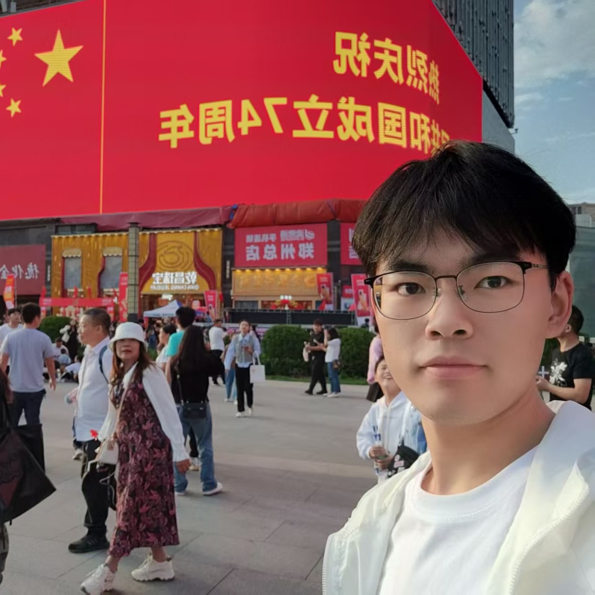

SEP 2026 — PRESENT
CURRENT · MASTER'S DEGREE
Shenzhen University
College of Computer Science and Software · Computer Technology

2026 Shenzhen University · A new chapter
SHENZHEN UNIVERSITY · MASTER'S STUDENT IN COMPUTER TECHNOLOGY
The strong wind blows against my face, I keep running forward against it, firmly believing that the answer lies just ahead.
01 · ABOUT
“Start with attention to every detail.”
A master's student in Computer Technology at Shenzhen University focusing on computer vision and image segmentation, I come from Xuchang, Henan and now live in Shenzhen. Committed to continuous learning and thoughtful reflection, I build resilience via long‑distance running. I like tackling complex problems to create practical solutions, with competitions, projects and social practice broadening my technical insight and teamwork skills.
02 · EDUCATION
CURRENT · MASTER'S DEGREE
College of Computer Science and Software · Computer Technology
BACHELOR'S DEGREE
School of Software · Computer Science and Technology
Key courses: Advanced Mathematics, Probability and Mathematical Statistics, Software Engineering, Discrete Mathematics, Computer Networks, Data Structures, and Operating Systems.
03 · EXPERIENCE
NATIONAL SECOND PRIZE · 2025
NATIONAL THIRD PRIZE · 2025
THIRD PRIZE, HENAN DIVISION · 2025
Built a residential property management system through video-based learning and AI-assisted development, implementing property-fee reminders, parking management, owner repair requests, and related CRUD operations.
Designed a practice target machine containing five flags, covering database vulnerabilities, image steganography, XSS, kernel vulnerabilities, and other common forms for hands-on security analysis.
04 · HONORS & SKILLS
Outstanding Communist Youth League Member
Merit Student Model
National Encouragement Scholarship
Outstanding Volunteer
05 · BEYOND THE DESK
My personal best running results are as follows: 3 km at 11:39, 5 km at 19:46, 10 km at 44:16, half‑marathon at 1:39:50 and full‑marathon at 4:10:26.
Long‑term training has cultivated my patience, rhythm, and resilience. These qualities also guide my responses to academic pressure, complex problems, and unfamiliar challenges.